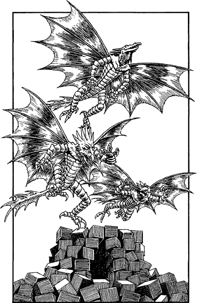

60
For countless minutes you hurtle into a whirling abyss of darkness and howling gales, torn by freezing winds that cut to the marrow despite your Magnakai protections. Then, as if waking from a dream, the sensation of falling abruptly ceases and you find yourself standing on a plateau of black volcanic rock, cratered and split by rivers of blazing lava. You take a tentative step forwards and feel the ground sag beneath your feet. The thin crust of cooled lava wrinkles and tears, and a jet of flickering yellow flame shoots upwards to engulf your legs. 8
Your Nexus skills are sufficiently developed to protect you from the flames and hellish temperature, but you are amazed that your boots and clothing have not ignited. Then you sense that your entirety is being protected by a field of energy radiating from the Platinum Amulet given you by Gwynian the Sage. Silently you thank him for his gift, for you suspect now that even your Kai skills would be hard-pressed to keep you safe in this alien domain.

With difficulty you cross the semi-molten terrain and reach an island of blue-grey basalt rock, strewn with cubes of obsidian and jet. At the island’s centre you discover a huge, untidy pile of cubes which make a crude temple. There is a yawning hollow at its base and, as you draw closer, you sense something is lurking there. Suddenly, a trio of horny-skinned creatures emerge from the dark hollow and take to the air on wings that glimmer like burnished gold. You watch them ascend, but you have difficulty following their flight when their bodies begin to flicker in and out of existence.
If you possess Grand Huntmastery and have reached the rank of Sun Lord, turn to 158.
If you do not possess this Discipline, or if you have yet to attain this level of Kai rank, turn to 52.
Footnotes
[8] You are now on the Plane of Darkness (cf. Section 72). If you possess the Sommerswerd, Section 98 of Dawn of the Dragons suggests that you may be able to add 4 to your COMBAT SKILL when using it in the Plane of Darkness (in addition to all other combat bonuses for this Special Item).